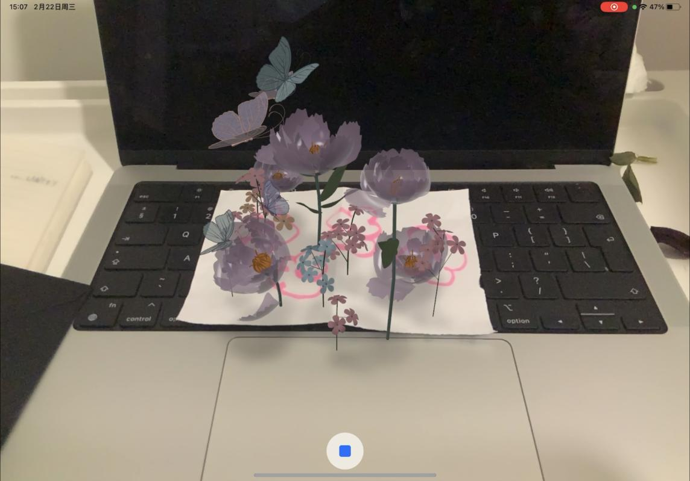
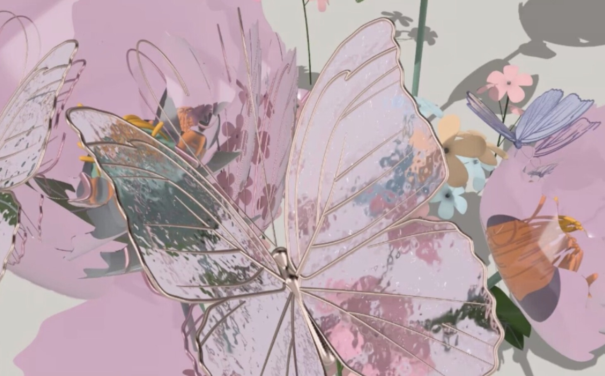

Vimeo Video
Video from this Blossom
Images
 Because I think there is a conceptual and non-realistic nature to the ar world, when we draw something we can transform it into a virtual reality that appears in our field of vision. It's a very interesting thing. It would be a lot less fun if it only existed in the device without any interaction with reality. For example, In Narduli Studio's La Raza, people's gestures change and so do the visual effects. So I started with the idea of a realistic brush, when I simply draw a few flowers and the device recognises the whole drawing and then anchors my model to the paper. To interact with the model, I made a click on the screen and the flowers will make a crisp sound and shake a little. There is a feedback when we touch them. They are like an interesting living thing.